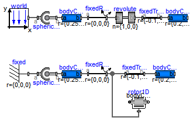

This library demonstrates the usage of elements of the Mechanics.Rotational library by taking into account all 3-dim. effects. The reason for this type of modeling is to speedup the simulation drastically. This is possible if moving bodies have rotational symmetry. A typical application area are drive trains, driving joints of a multi-body system.
Extends from Modelica.Icons.ExamplesPackage (Icon for packages containing runnable examples).
| Name | Description |
|---|---|
| Demonstrates that a cylindrical body can be replaced by Rotor1D model | |
 Modelica.Mechanics.MultiBody.Examples.Rotational3DEffects.GyroscopicEffects
Modelica.Mechanics.MultiBody.Examples.Rotational3DEffects.GyroscopicEffects
This example consists of a body that is attached to the world system with a spherical joint. On this body, a "rotor", i.e., a body with rotational symmetry is present. Two kinds of models are shown:
The simulation reveals that both the kinematic movement and the reaction forces on the environment (object "world" and "fixed" respectively) are identical for both models.
A typical usage scenario is to model a complete drive train of a vehicle, including the automatic gearbox, with elements of the "Mechanics.Rotational" library, but using the "Rotor1D" model instead of the "Rotational.Components.Inertia" component. This drive train model can be mounted on a 3-dim. multi-body model of the vehicle. Additionally, one rigid body has to be fixed to the vehicle that has the mass, center of mass and inertia tensor of the complete drive train. Both models together, give exactly the same effect, as if every part of the drive train would have been modelled solely with mult-body components. One benefit of this modeling is that the simulation is much faster.
Extends from Modelica.Icons.Example (Icon for runnable examples).
model GyroscopicEffects "Demonstrates that a cylindrical body can be replaced by Rotor1D model" extends Modelica.Icons.Example;inner World world( driveTrainMechanics3D=true); Joints.Spherical spherical1( angles_fixed=true, w_rel_a_fixed=true, z_rel_a_fixed=false); Parts.BodyCylinder bodyCylinder1( r={0.25,0,0}, diameter=0.05); Parts.FixedRotation fixedRotation1( angle=45, n={0,1,0}); Joints.Revolute revolute( n={1,0,0}, a(fixed=false), phi(fixed=true), w(fixed=true, start=10)); Parts.FixedTranslation fixedTranslation( r={-0.1, 0,0}); Parts.BodyCylinder bodyCylinder2( diameter= 0.1, r={0.2,0,0}); Parts.Fixed fixed; Joints.Spherical spherical2( angles_fixed=true, w_rel_a_fixed=true, z_rel_a_fixed=false); Parts.BodyCylinder bodyCylinder3( r={0.25,0,0}, diameter=0.05, color={0,128,0}); Parts.FixedRotation fixedRotation2( n={0,1,0}, angle=45); Parts.FixedTranslation fixedTranslation1( r={ -0.1,0,0}); Parts.BodyCylinder bodyCylinder4( diameter=0.1, r={0.2,0,0}, color={0,128,0}); Parts.Rotor1D rotor1D( J=bodyCylinder4.I[1, 1], n={1,0,0}, a(fixed=false), phi(fixed=true), w(fixed=true, start=10)); equationconnect(world.frame_b,spherical1. frame_a); connect(spherical1.frame_b,bodyCylinder1. frame_a); connect(bodyCylinder1.frame_b,fixedRotation1. frame_a); connect(fixedRotation1.frame_b,revolute. frame_a); connect(revolute.frame_b,fixedTranslation. frame_a); connect(fixedTranslation.frame_b,bodyCylinder2. frame_a); connect(spherical2.frame_b,bodyCylinder3. frame_a); connect(bodyCylinder3.frame_b,fixedRotation2. frame_a); connect(fixed.frame_b,spherical2. frame_a); connect(fixedTranslation1.frame_b,bodyCylinder4. frame_a); connect(fixedRotation2.frame_b,fixedTranslation1. frame_a); connect(rotor1D.frame_a,fixedRotation2. frame_b); end GyroscopicEffects;
Modelica.Mechanics.MultiBody.Examples.Rotational3DEffects.ActuatedDrivemodel ActuatedDrive extends Modelica.Icons.Example;Parts.BodyShape bodyCylinder( r={0.5,0,0}, m=0, I_11=2, I_22=0, I_33=0, shapeType="cylinder", width=0.1, animateSphere=false, r_shape={0.1,0,0}, r_CM={0,0,0}); Joints.Revolute revolute( n={1,0,0}, a(fixed=false), phi(fixed=true), w(fixed=true)); inner World world( g=0, driveTrainMechanics3D= true); Forces.Torque torque; Blocks.Sources.Sine sine[ 3](amplitude={1,0,0}, freqHz={1,1,1}); inner Parts.Fixed fixed; Parts.Rotor1D rotor1D( J=2, phi(fixed=true), w(fixed=true)); Rotational.Sources.Torque torque1(useSupport=true); Parts.Mounting1D mounting1D; equationconnect(world.frame_b,revolute. frame_a); connect(revolute.frame_b,bodyCylinder. frame_a); connect(torque.frame_b,bodyCylinder. frame_b); connect(torque.frame_resolve,world. frame_b); connect(torque.frame_a,world. frame_b); connect(sine.y,torque. torque); connect(fixed.frame_b,rotor1D. frame_a); connect(torque1.flange,rotor1D. flange_a); connect(mounting1D.flange_b,torque1.support); connect(mounting1D.frame_a,fixed. frame_b); connect(sine[1].y,torque1. tau); end ActuatedDrive;
Modelica.Mechanics.MultiBody.Examples.Rotational3DEffects.MovingActuatedDrivemodel MovingActuatedDrive extends Modelica.Icons.Example;Parts.BodyShape bodyCylinder( r={0.5,0,0}, m=0, I_11=2, I_22=0, I_33=0, shapeType="cylinder", width=0.1, animateSphere=false, r_shape={0.1,0,0}, r_CM={0,0,0}); Joints.Revolute revolute( n={1,0,0}, a(fixed=false), phi(fixed=true), w(fixed=true)); inner World world( g=0, driveTrainMechanics3D= true); Forces.Torque torque; Blocks.Sources.Sine sine1[ 3](amplitude={1,0,0}, freqHz={1,1,1}); Parts.Rotor1D rotor1D( J=2, phi(fixed=true), w(fixed=true)); Rotational.Sources.Torque torque1(useSupport=true); Parts.Mounting1D mounting1D; Joints.Revolute r1(useAxisFlange=true, n={0,1,0}); Rotational.Sources.Position position1(useSupport=true); Blocks.Sources.Sine sine2( amplitude=2, freqHz=1); Parts.Mounting1D mounting1D1; Joints.Revolute r2(useAxisFlange=true, n={0,1,0}); Rotational.Sources.Position position2(useSupport=true); Parts.Mounting1D mounting1D2; Parts.Fixed fixed; equationconnect(revolute.frame_b,bodyCylinder. frame_a); connect(torque.frame_b,bodyCylinder. frame_b); connect(sine1.y,torque. torque); connect(torque1.flange,rotor1D. flange_a); connect(mounting1D.flange_b,torque1.support); connect(r1.frame_a,world. frame_b); connect(position1.flange,r1. axis); connect(position1.support,mounting1D1. flange_b); connect(mounting1D1.frame_a,world. frame_b); connect(sine2.y,position1. phi_ref); connect(r1.frame_b,revolute. frame_a); connect(torque.frame_resolve,revolute. frame_a); connect(torque.frame_a,revolute. frame_a); connect(position2.flange,r2. axis); connect(position2.support,mounting1D2. flange_b); connect(fixed.frame_b,r2. frame_a); connect(fixed.frame_b,mounting1D2. frame_a); connect(sine2.y,position2. phi_ref); connect(r2.frame_b,rotor1D. frame_a); connect(r2.frame_b,mounting1D. frame_a); connect(sine1[1].y,torque1. tau); end MovingActuatedDrive;
Modelica.Mechanics.MultiBody.Examples.Rotational3DEffects.GearConstraintmodel GearConstraint extends Modelica.Icons.Example;Joints.GearConstraint gearConstraint( ratio=10); inner World world( driveTrainMechanics3D=true, g=0); Parts.BodyCylinder cyl1( diameter=0.1, color={0,128,0}, r={0.4,0,0}); Parts.BodyCylinder cyl2( r={0.4,0,0}, diameter= 0.2); Forces.Torque torque1; Blocks.Sources.Sine sine[ 3](amplitude={2,0,0}, freqHz={1,1,1}); Parts.Fixed fixed; Rotational.Components.Inertia inertia1( J=cyl1.I[1, 1], a(fixed=false), phi(fixed=true), w(fixed=true)); Rotational.Components.IdealGear idealGear( ratio=10, useSupport=true); Rotational.Components.Inertia inertia2( J=cyl2.I[1, 1]); Rotational.Sources.Torque torque2(useSupport=true); Parts.Mounting1D mounting1D; equationconnect(world.frame_b,gearConstraint. bearing); connect(cyl1.frame_b,gearConstraint. frame_a); connect(gearConstraint.frame_b,cyl2. frame_a); connect(torque1.frame_b,cyl1. frame_a); connect(torque1.frame_a,world. frame_b); connect(sine.y,torque1. torque); connect(inertia1.flange_b,idealGear. flange_a); connect(idealGear.flange_b,inertia2. flange_a); connect(torque2.flange,inertia1. flange_a); connect(sine[1].y,torque2. tau); connect(mounting1D.flange_b,idealGear.support); connect(mounting1D.flange_b,torque2.support); connect(fixed.frame_b,mounting1D. frame_a); end GearConstraint;